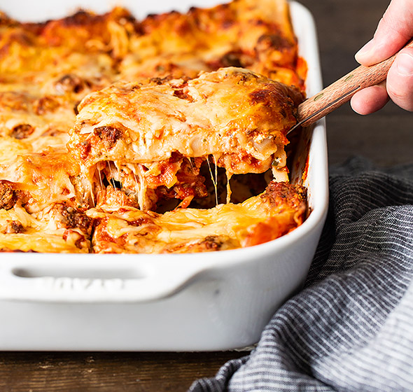

Best lasagna recipe!

Are you hungry? Do you want to eat something delicious? Well follow this recipe for the BEST recipe in the world!
Ingredients
For this recipe, you will need the following ingredients:
- 500g ground beef
- 1x onion and 2x cloves of garlic
- 1x can of crushed tomatoes, 2x cans of tomato sauce, and 2x cans of tomato pasta
- 2 tablespoons of white sugar
- Fresh parsley, dried basil leaves, salt, Italian seasoning, fennel seeds, and black pepper
- Lasagna noodles
- Parmesan, mozzarella, and ricotta cheese
- 1x egg
Steps
- Make the meat sauce
- Cook the noodles
- Make the ricotta mixture
- Layer the lasagna according to the recipe instructions
- Cover with foil and bake
- Let the lasagna rest before serving